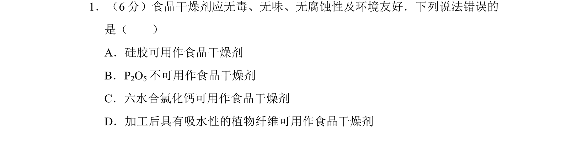
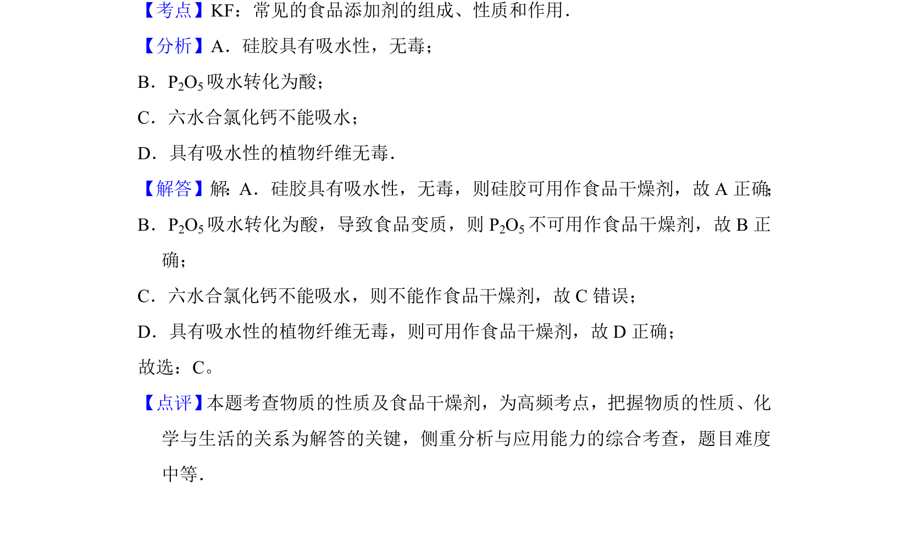

考点：常见的食品添加剂的组成性质和作用 干燥剂 吸水性 物质性质

考查常见物质用作食品干燥剂的适用性，基于其吸水性和安全性进行判断。

📄 原 PDF 第 1 页：
素材/真题/吉林/2008-2024·（吉林）化学高考真题/2015年高考化学试卷（新课标Ⅱ）（解析卷）.pdf
1．（6分）食品干燥剂应无毒、无味、无腐蚀性及环境友好．下列说法错误的 是（ ） A．硅胶可用作食品干燥剂 B．P2O5不可用作食品干燥剂 C．六水合氯化钙可用作食品干燥剂 D．加工后具有吸水性的植物纤维可用作食品干燥剂
【考点】KF：常见的食品添加剂的组成、性质和作用．菁优网版权所有 【分析】A．硅胶具有吸水性，无毒； B．P2O5吸水转化为酸； C．六水合氯化钙不能吸水； D．具有吸水性的植物纤维无毒． 【解答】解：A．硅胶具有吸水性，无毒，则硅胶可用作食品干燥剂，故A正确； B．P2O5吸水转化为酸，导致食品变质，则P 2O5不可用作食品干燥剂，故B正 确； C．六水合氯化钙不能吸水，则不能作食品干燥剂，故C错误； D．具有吸水性的植物纤维无毒，则可用作食品干燥剂，故D正确； 故选：C。 【点评】 本题考查物质的性质及食品干燥剂，为高频考点，把握物质的性质、化 学与生活的关系为解答的关键，侧重分析与应用能力的综合考查，题目难度 中等．